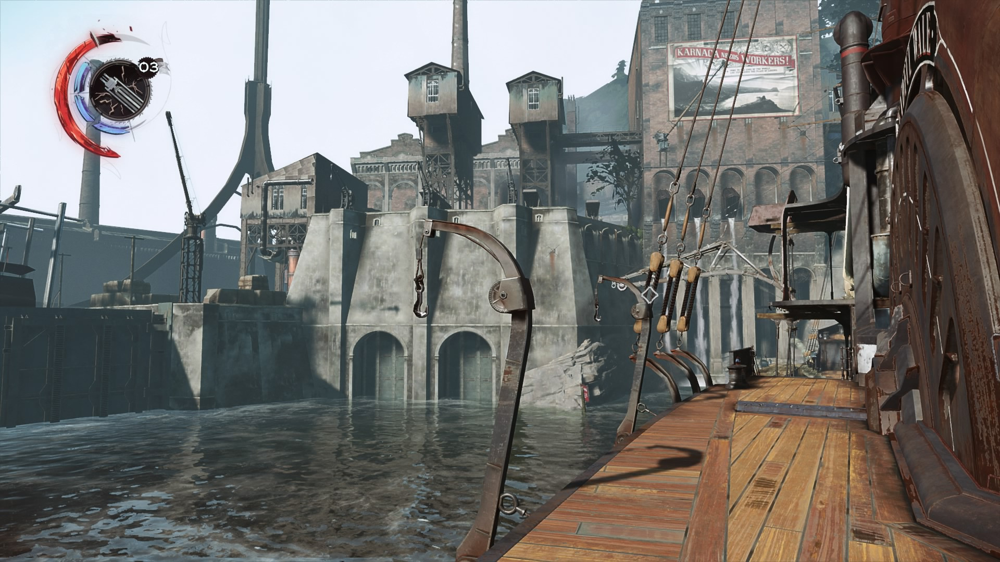

Скриншоты



Об игре
Dishonored — культовая игра в жанре immersive sim, действие которой происходит в стимпанк-городе Дануолл. Вы — Корво Аттано, телохранитель императрицы, которого предали и обвинили в её убийстве. Теперь вы стали сверхъестественным убийцей, стремящимся отомстить тем, кто погубил вашу жизнь.
Особенности игры:
- Свобода действий: Подходите к каждой миссии так, как хотите. Скрытное прохождение, открытый бой или смешанный стиль — выбор за вами
- Сверхъестественные способности: Используйте уникальные силы, такие как Телепортация, Остановка времени и Призыв крыс
- Динамичный мир: Каждое ваше решение влияет на мир и развитие сюжета. Меньше убийств — меньше хаоса в городе
- Уникальный сеттинг: Смесь викторианской эстетики, стимпанка и тёмного фэнтези создаёт неповторимую атмосферу
- Нелинейный геймплей: Множество путей для достижения целей и различные способы устранения целей
- Система хаоса: Ваши действия определяют финал игры и состояние мира